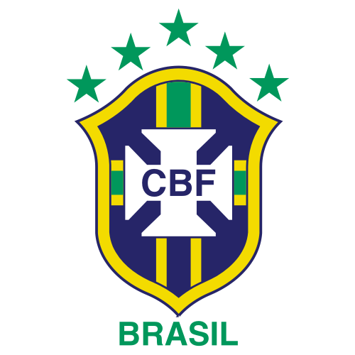

por Pedro Henrique B. N. Prado

Quando Dunga assumiu a seleção brasileira em 2006, logo após o fiasco na Copa do Mundo da Alemanha, a desconfiança do torcedor brasileiro era grande. Afinal, era a primeira experiência como treinador do capitão do tetra. O início foi conturbado, cheio de altos e baixos e muita pressão quando o Brasil chegou a ficar em sexto lugar nas eliminatórias. Mas Dunga não abaixou a guarda e devolveu o orgulho do brasileiro com a seleção. E o país chega, mais uma vez, ao Mundial como um dos favoritos após vencer a Copa América e a Copa das Confederações.
Sob o comando de Dunga, o Brasil atuou 52 vezes, com 36 vitórias, 11 empates e só cinco derrotas. Após experiências, o treinador tem o grupo da Copa do Mundo praticamente formado. Foram 86 jogadores convocados nos últimos três anos e 67 atletas utilizados. Do quarteto mágico, apenas Kaká restou. Ronaldo está fora dos planos. Ronaldinho Gaúcho ainda luta contra o tempo para ganhar uma nova oportunidade. E Adriano virou reserva de Luis Fabiano. O atacante do Sevilha, aliás, virou um anjo da guarda de Dunga marcando gols importantes durante a afirmação do treinador.
Quem ganhou espaço nos últimos jogos e parece ter carimbado o passaporte para a África do Sul foi Nilmar. Apesar de não brilhar no futebol espanhol, o atacante vem ganhando a luta com Alexandre Pato, estrela do Milan. São poucas as dúvidas em relação ao grupo. Juan, com problemas físicos nas últimas duas temporadas, talvez seja o grande ponto de interrogação. Sem o companheiro, Lúcio passou a jogar com Luisão na zaga.
A principal preocupação da comissão técnica é não repetir os erros de 2006. Por isso, o grupo deve ser blindado desde a preparação para a Copa do Mundo, em Curitiba. Pouco oba-oba, quase nenhum contato com a imprensa, nada de festa de torcedores. Tudo pelo tão sonhado hexa.